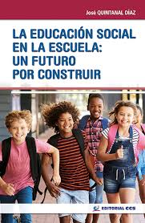

Articulo 1
"refuerzo de la educacion personal"
La educación es un proceso de socialización, o sea, de preparación del hombre para la vida en sociedad, lo que requiere de aprendizajes muy diversos; de conocimientos, habilidades, normas y valores, que identifican al sujeto como miembro de una comunidad cultural, de un pueblo, de una nación.
